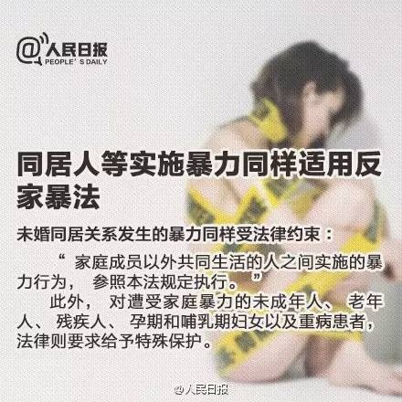
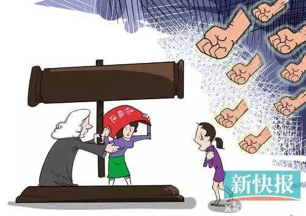

从今天开始，父母对孩子施暴，犯法!亲密关系之间发生的暴力，犯法！共同生活在一起的人发生的暴力，犯法！这个法律就是中国第一部反家庭暴力法。我们在今天，为性少数社群的小伙伴们整理出一些贴士，看这部中国反家暴法可以如何来保护我们。法律第二条 本法所称家庭暴力，是指家庭成员之间以殴打、捆绑、残害、限制人身自由以及经常性谩骂、恐吓等方式实施的身体、精神等侵害行为。请社群小伙伴们注意：当性少数社群小伙伴因性倾向、性别表达而受到来自父母家人的暴力，包括限制人身自由及经常性谩骂，恐吓等行为，实际上已经触犯了反家暴法，因此我们可以用此法来保护我们自己。2. 性少数群体伙伴可能一直存在的困惑，我们的亲密关系之间的暴力可以被反家暴法保护吗？是的。根据反家暴法第三十七条 家庭成员以外共同生活的人之间实施的暴力行为，参照本法规定执行。同居关系是被保护的。

（图片来源：人民日报）
根据反家暴法第十五条规定：公安机关接到家庭暴力报案后应当及时出警，制止家庭暴力，按照有关规定调查取证，协助受害人就医、鉴定伤情。请社群小伙伴们注意：当暴力发生，请第一时间 报警 报警 报警（重要的事情说三遍）。请在报警同时，要求警察做出警记录，写清暴力的情况。同时，小伙伴们自己需要保留证据，证据包括上面提到的验伤报告，报警记录，录音，微信记录，短信记录和照片等。第十六条 家庭暴力情节较轻，依法不给予治安管理处罚的，由公安机关对加害人给予批评教育或者出具告诫书。告诫书应当包括加害人的身份信息、家庭暴力的事实陈述、禁止加害人实施家庭暴力等内容。第十七条 公安机关应当将告诫书送交加害人、受害人，并通知居民委员会、村民委员会。居民委员会、村民委员会、公安派出所应当对收到告诫书的加害人、受害人进行查访，监督加害人不再实施家庭暴力。除了报警，我们还能用什么保护自己呢？答案是，人身安全保护令。法律第二十三条规定：当事人因遭受家庭暴力或者面临家庭暴力的现实危险，向人民法院申请人身安全保护令的，人民法院应当受理。第二十四条 申请人身安全保护令应当以书面方式提出；书面申请确有困难的，可以口头申请，由人民法院记入笔录。第二十五条 人身安全保护令案件由申请人或者被申请人居住地、家庭暴力发生地的基层人民法院管辖。
请社群小伙伴们注意：当小伙伴们受到家暴危险时，可以向申请人或被申请人的居住地或者家暴发生地的基层法院申请人身安全保护令。

（图片来源：新快报）
有关人身安全保护令的相关解释请见下文：
第二十六条 人身安全保护令由人民法院以裁定形式作出。第二十七条 作出人身安全保护令，应当具备下列条件： (三)有遭受家庭暴力或者面临家庭暴力现实危险的情形。第二十八条 人民法院受理申请后，应当在七十二小时内作出人身安全保护令或者驳回申请；情况紧急的，应当在二十四小时内作出。 (二)禁止被申请人骚扰、跟踪、接触申请人及其相关近亲属；第三十条 人身安全保护令的有效期不超过六个月，自作出之日起生效。人身安全保护令失效前，人民法院可以根据申请人的申请撤销、变更或者延长。第三十一条 申请人对驳回申请不服或者被申请人对人身安全保护令不服的，可以自裁定生效之日起五日内向作出裁定的人民法院申请复议一次。人民法院依法作出人身安全保护令的，复议期间不停止人身安全保护令的执行。第三十二条 人民法院作出人身安全保护令后，应当送达申请人、被申请人、公安机关以及居民委员会、村民委员会等有关组织。人身安全保护令由人民法院执行，公安机关以及居民委员会、村民委员会等应当协助执行。了解“反家暴法”，当暴力发生时，用法律保护自己。